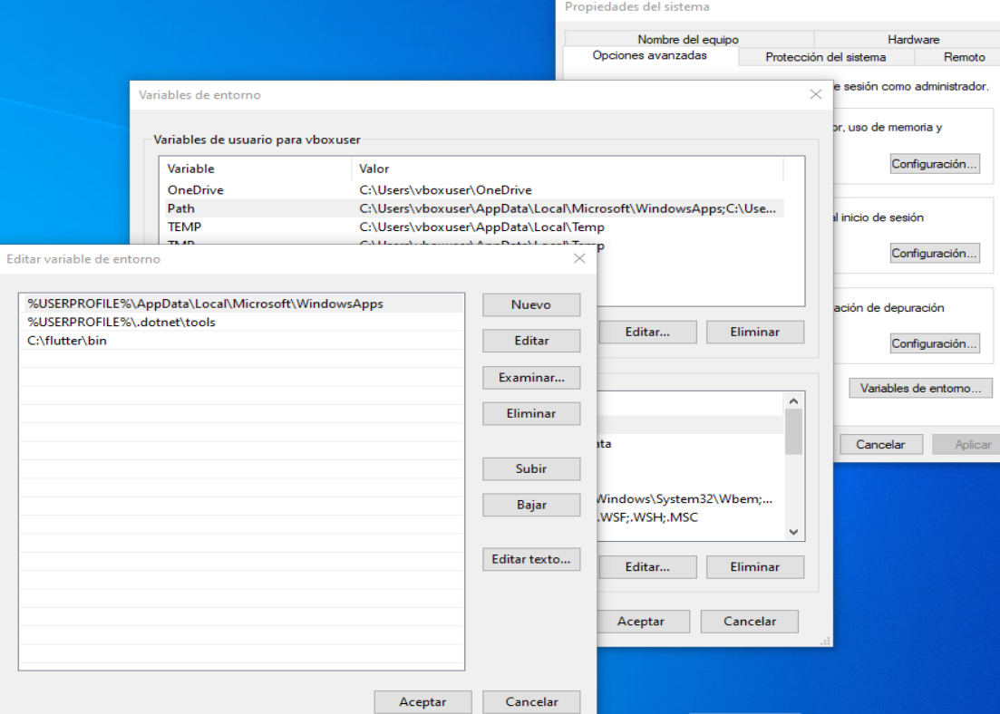
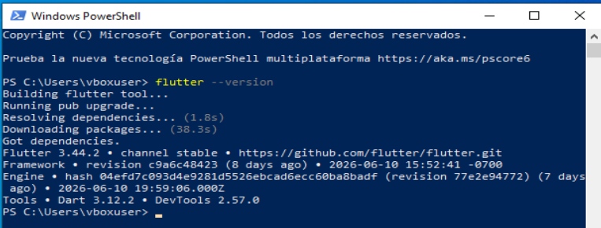
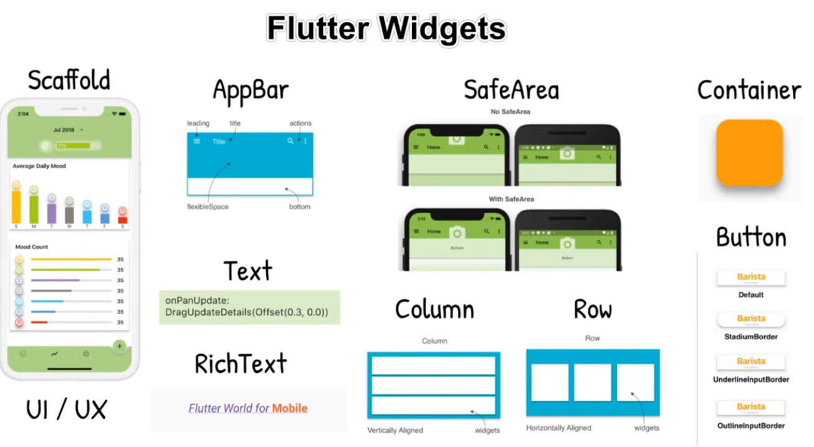
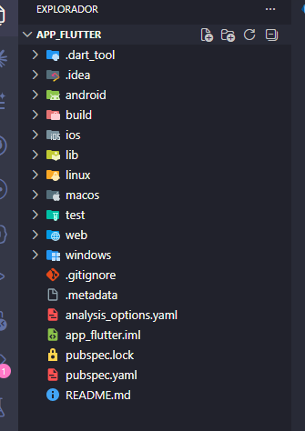

Hoy nadie sale sin Flutter corriendo en su máquina. Instalamos herramientas, aprendemos lo esencial de Dart escribiendo código real, y cerramos con una pantalla interactiva: un botón que cambia un mensaje en pantalla.
Antes de tocar una línea de Dart, dejen el entorno listo. Sigan este orden exacto para evitar errores de configuración:
Paso 1. Descargar Flutter SDK. Entren a https://docs.flutter.dev/get-started/install/windows o, si usan Mac, a https://docs.flutter.dev/get-started/install/macos. Hagan clic en Download Flutter SDK, descarguen el archivo oficial y descomprímanlo en una ruta corta como C:\src\flutter o D:\flutter. No lo dejen en Downloads, Desktop, OneDrive ni dentro de Program Files.
Paso 2. Agregar Flutter al PATH. Busquen en Windows "Editar las variables de entorno del sistema" → Variables de entorno → en Path agreguen la carpeta C:\flutter\bin (o la ruta donde lo descomprimieron). Cierren y vuelvan a abrir la terminal, luego prueben con flutter --version. Si responde con la versión, el PATH quedó bien.
Paso 3. Instalar VS Code. Descárguenlo desde https://code.visualstudio.com/Download. En Windows, elijan User Installer de 64 bits; en Mac, la versión estable para Apple Silicon o Intel según su equipo. Instalen con las opciones por defecto y abran VS Code al terminar.
Paso 4. Instalar Android Studio para tener Android SDK y emulador. Descárguenlo desde https://developer.android.com/studio. Instalen con la configuración estándar. Luego abran More Actions → SDK Manager y verifiquen que estén instalados Android SDK, Android SDK Platform-Tools y Android SDK Command-line Tools. Después entren a Device Manager y creen un emulador, por ejemplo un Pixel con una imagen reciente de Android. Si prefieren usar un teléfono físico, igual necesitan este paso porque Flutter usa el SDK y las herramientas de Android aunque no trabajen con emulador.
Paso 5. Instalar las extensiones de VS Code. Ya dentro de VS Code, abran Ctrl+Shift+X, escriban Flutter e instalen la extensión publicada por Dart Code. Confirmen que también aparezca instalada Dart. Las demás extensiones de abajo son apoyo, pero esas dos son obligatorias.
Paso 6. Verificar todo en terminal. Abran una terminal nueva y ejecuten flutter doctor. Si aparece una advertencia sobre licencias de Android, ejecuten flutter doctor --android-licenses y acepten todo con y. Recién cuando Flutter y VS Code estén en verde, sigan con la práctica.

C:\flutter\bin. No creen una variable nueva llamada flutter; la ruta debe quedar dentro de Path.
flutter --version. Si aparece la versión de Flutter y Dart, el comando ya fue reconocido correctamente.Alternativa al emulador: también pueden usar un teléfono Android real. Activen Opciones de desarrollador y Depuración USB, conéctenlo por cable, autoricen la computadora y verifiquen con flutter devices. Si quieren ver la pantalla del teléfono en la PC durante la clase, pueden usar Vysor; sirve para mostrar y controlar el equipo, pero no reemplaza el Android SDK.
Abran la pestaña de Extensiones (Ctrl+Shift+X / Cmd+Shift+X) e instalen, en este orden:
Verificación rápida: antes de seguir, confirmen que las extensiones Flutter y Dart aparezcan instaladas. Las dos marcadas "OBLIGATORIA" son indispensables; las "RECOMENDADA" se pueden instalar después si el tiempo aprieta.
Paso a paso: ejecutar la app en un emulador Android. Si quieren probar la app como aplicación móvil real, sigan esta secuencia completa.
1. Abran Android Studio.
2. Entren a Device Manager.
3. Si todavía no existe un emulador, creen uno. Una opción simple es un Pixel con una imagen reciente de Android.
4. Enciendan el emulador con el botón Play y esperen a que termine de arrancar por completo.
5. En la terminal del proyecto ejecuten:
6. Verifiquen que aparezca un dispositivo parecido a emulator-5554. Ese nombre identifica al emulador activo.
7. Ejecuten la app directamente en ese emulador con:
8. Si prefieren que Flutter muestre la lista de dispositivos y les pida elegir, usen:
9. Si el emulador no aparece en la lista, revisen que siga encendido y ejecuten:
Regla práctica: usen Chrome o Edge para avanzar más rápido en las primeras pruebas, y usen el emulador Android cuando quieran validar el comportamiento como app móvil real.
No usen un archivo aparte: abran DartPad (dartpad.dev) en el navegador para esta sección — es más rápido para experimentar que crear archivos nuevos. Vuelven a VS Code en el Bloque 3.
Modo práctica: los ejemplos de código de esta sección están bloqueados para copiar y pegar. La idea es que escriban cada línea manualmente para fijar sintaxis, errores comunes y estructura.
void main() {
String nombre = 'Ana'; // texto
int edad = 21; // número entero
double estatura = 1.65; // número decimal
bool esEstudiante = true; // verdadero o falso
print('$nombre tiene $edad años'); // interpolación con $
}Cambien el valor de nombre y edad, y luego presionen "Run" en DartPad para ver el cambio inmediato. Esta práctica introduce la idea de "cambio de estado → cambio visible" que usarán durante todo el curso.
Null safety en una frase: en Dart, una variable normal nunca puede quedar "vacía" (null) a menos que se lo permitas explícitamente con String? nombre. El ? es Dart preguntando "¿esto puede no tener valor?".
void main() {
// comentario de una línea
final nombreCurso = 'Flutter desde cero';
const diasSemana = 7;
print(nombreCurso);
print(diasSemana);
}final se usa cuando el valor se asigna una vez durante la ejecución y luego no cambia. const se usa cuando el valor es fijo desde el código mismo. Los comentarios con // ayudan a documentar ideas rápidas o explicar una línea importante.
void main() {
String nombre = 'Lucía';
int tareasHechas = 3;
int tareasPendientes = 2;
int total = tareasHechas + tareasPendientes;
bool terminoTodo = tareasPendientes == 0;
print('Hola ' + nombre);
print('Total de tareas: $total');
print('¿Terminó todo? $terminoTodo');
}Aquí aparecen tres ideas clave: concatenar texto con +, combinar variables dentro de un string con $, y usar operadores como +, -, *, /, ==, > o < para calcular o comparar valores.
void main() {
int tareasPendientes = 1;
if (tareasPendientes == 0) {
print('Todo completado');
} else {
print('Aún hay tareas por hacer');
}
}Los condicionales permiten que el programa tome decisiones. Esta lógica aparece después en Flutter cuando una pantalla muestra un mensaje, un color o un widget distinto según el estado de la app.
String saludar(String nombre) {
return 'Hola, $nombre 👋';
}
void main() {
print(saludar('Carlos'));
}Una función agrupa instrucciones que pueden reutilizarse. En Flutter esto aparece todo el tiempo: una función puede construir un widget, validar un texto o responder a un botón.
class Tarea {
String titulo;
bool completada;
Tarea(this.titulo, this.completada);
}
void main() {
Tarea tarea1 = Tarea('Estudiar Flutter', false);
print(tarea1.titulo);
print(tarea1.completada);
}Una clase define la estructura de un tipo de dato propio. En este ejemplo, Tarea tiene dos atributos: titulo y completada. El constructor Tarea(...) crea objetos nuevos con esos valores.
Más adelante en Flutter, una clase puede representar una tarea, un usuario o cualquier estructura con varios datos relacionados. Esto permite que el código sea más claro que manejar todo solo con strings sueltos.
void main() {
Map<String, dynamic> tarea = {
'titulo': 'Estudiar Flutter',
'prioridad': 'alta',
'completada': false,
};
print(tarea['titulo']);
}Un Map guarda datos en formato clave → valor. Es útil cuando un mismo elemento necesita varios atributos, por ejemplo título, prioridad y estado.
void main() {
List<String> tareas = ['Estudiar', 'Hacer ejercicio'];
tareas.add('Leer'); // agregar
tareas.removeAt(0); // eliminar por posición
for (var tarea in tareas) {
print('- $tarea');
}
}Esta es exactamente la estructura de datos que va a sostener la app de las próximas dos sesiones: una List<String> con tareas que crece y se reduce.
Antes del código, fíjense en esta idea central: en Flutter la interfaz no se arma con archivos XML separados ni con controles visuales externos al lenguaje. La UI se construye directamente en Dart usando widgets. Eso hace que estructura, comportamiento y estado trabajen juntos en el mismo flujo de código.

Diferencia clave: en enfoques tradicionales suele haber una separación más rígida entre la vista y la lógica de la interfaz. En Flutter, la pantalla se describe con widgets en Dart y, cuando cambia el estado, Flutter vuelve a construir esa descripción para reflejar el nuevo resultado visual.

lib/ es la carpeta más importante del curso. Aquí va casi todo el código Dart de la app: pantallas, widgets, lógica básica y el archivo main.dart. Es la carpeta que usarán con más frecuencia.
android/ contiene la configuración nativa para compilar la app en Android. Normalmente no se toca al inicio, salvo cuando más adelante se configuren permisos, íconos o detalles de compilación.
ios/, macos/, linux/, windows/ y web/ guardan la parte específica de cada plataforma. Flutter comparte gran parte del código en lib/, pero cada una de esas carpetas existe para generar la app en ese entorno.
test/ se usa para pruebas automáticas. En esta etapa puede quedar sin tocar, pero es la carpeta donde se escriben tests cuando se empieza a validar el comportamiento del código.
build/ guarda archivos generados automáticamente al compilar o ejecutar. No es una carpeta para editar manualmente.
.dart_tool/ y .idea/ contienen archivos internos de Dart, Flutter o del editor. Sirven para configuración y caché del entorno, no para escribir la lógica de la app.
pubspec.yaml es uno de los archivos más importantes fuera de lib/. Aquí se definen el nombre del proyecto, la versión, los paquetes y los assets como imágenes o fuentes.
Regla práctica para empezar: miren toda la estructura, pero trabajen casi siempre en lib/main.dart y, más adelante, en otros archivos dentro de lib/.
Si ya están dentro de la carpeta del proyecto, por ejemplo app_flutter, usen:
Ese punto . significa: crear el proyecto Flutter en la carpeta actual.
Si todavía no han entrado a la carpeta y quieren crearla desde cero, usen:
Después de crear el proyecto, ejecútenlo, esperen que abra la app inicial y recién entonces editen lib/main.dart.
main.dartSigan este orden para evitar errores de archivo faltante o de dispositivo:
Si al ejecutar flutter run aparece una lista de dispositivos: en una clase inicial conviene elegir Chrome o Edge porque arrancan más rápido, no requieren emulador ni celular y son suficientes para practicar widgets, estado y layout. Si quieres evitar la pregunta, ejecuta directamente flutter run -d chrome o flutter run -d edge.
Ejemplo 1. Este primer ejemplo cambia un mensaje al tocar un botón. Sirve para entender la relación entre StatefulWidget, una variable de estado y setState().
import 'package:flutter/material.dart'; // importa los widgets visuales de Flutter
void main() { // punto de entrada de la app
runApp(MiApp()); // inicia Flutter y dibuja el widget principal
}
class MiApp extends StatelessWidget { // widget raíz que no guarda estado
@override
Widget build(BuildContext context) { // construye la interfaz inicial
return MaterialApp( // contenedor principal de una app Material Design
home: PantallaInicio(), // define la primera pantalla visible
);
}
}
class PantallaInicio extends StatefulWidget { // pantalla que sí puede cambiar con el tiempo
@override
State<PantallaInicio> createState() => _PantallaInicioState(); // conecta el widget con su estado
}
class _PantallaInicioState extends State<PantallaInicio> { // aquí viven los datos que cambian
String mensaje = 'Aún no tocas el botón'; // texto inicial que se muestra en pantalla
void cambiarMensaje() { // función que modifica el texto
setState(() { // avisa a Flutter que debe redibujar la pantalla
mensaje = '¡Lo lograste! 🎉'; // nuevo valor del mensaje
});
}
@override
Widget build(BuildContext context) { // describe todo lo que se verá en esta pantalla
return Scaffold( // estructura base de la pantalla
appBar: AppBar(title: Text('Mi Lista de Tareas')), // barra superior con título
body: Center( // centra el contenido en la pantalla
child: Column( // acomoda los widgets uno debajo del otro
mainAxisAlignment: MainAxisAlignment.center, // centra verticalmente los elementos
children: [
Text(mensaje, style: TextStyle(fontSize: 20)), // muestra el mensaje actual
SizedBox(height: 20), // deja un espacio vertical
ElevatedButton( // botón interactivo
onPressed: cambiarMensaje, // ejecuta la función al tocar el botón
child: Text('Tócame'), // texto visible dentro del botón
),
],
),
),
);
}
}Identifiquen estas piezas en orden mientras escriben el código y revisen qué función cumple cada una:
StatelessWidget vs StatefulWidget — el primero nunca cambia una vez dibujado; el segundo puede "recordar" datos (estado) y redibujarse cuando cambian.
build() — el método que describe qué se ve en pantalla. Flutter lo vuelve a llamar cada vez que el estado cambia.
setState() — la forma de avisarle a Flutter "algo cambió, vuelve a dibujar". Sin esta llamada, el cambio de la variable mensaje nunca se vería en pantalla.
Scaffold / AppBar / Column / Center — los widgets de estructura básica que casi toda pantalla de Flutter usa.
Error común: si ven "The method 'setState' isn't defined", probablemente la clase está extendiendo StatelessWidget en vez de State. Revisen que sea _PantallaInicioState extends State<PantallaInicio>.
Ejemplo 2. Ahora vean una versión más cercana a una app real con Material 3, un contador en el centro y un botón flotante para aumentar el valor. Este patrón se usa mucho para practicar estado y estructura visual.
import 'package:flutter/material.dart'; // importa los widgets necesarios de Flutter
void main() { // punto de entrada de la aplicación
runApp(MiContadorApp()); // inicia la app mostrando el widget principal
}
class MiContadorApp extends StatelessWidget { // widget raíz sin estado
@override
Widget build(BuildContext context) {
return MaterialApp(
debugShowCheckedModeBanner: false, // oculta la cinta de DEBUG
theme: ThemeData(
useMaterial3: true, // activa el estilo Material 3
colorScheme: ColorScheme.fromSeed(seedColor: Colors.blue), // genera la paleta desde un color base
),
home: PantallaContador(), // primera pantalla de la app
);
}
}
class PantallaContador extends StatefulWidget { // widget con estado porque el número cambia
@override
State<PantallaContador> createState() => _PantallaContadorState();
}
class _PantallaContadorState extends State<PantallaContador> {
int contador = 5; // valor inicial del contador
void incrementar() { // función que suma uno al contador
setState(() {
contador++; // aumenta el valor en 1
});
}
@override
Widget build(BuildContext context) {
return Scaffold(
appBar: AppBar(
title: Text('Pantalla principal'), // título superior
),
body: Center(
child: Column(
mainAxisAlignment: MainAxisAlignment.center, // centra el contenido verticalmente
children: [
Text(
'$contador',
style: Theme.of(context).textTheme.displayLarge, // número grande en el centro
),
Text('Cantidad de clicks'), // texto descriptivo debajo
],
),
),
floatingActionButton: FloatingActionButton(
onPressed: incrementar, // al tocar, aumenta el contador
child: Text('+1'), // texto dentro del botón flotante
),
);
}
}Qué cambia respecto al Ejemplo 1: aquí el estado ya no es un texto, sino un número entero. En lugar de cambiar un mensaje completo, se incrementa una variable int y Flutter redibuja la pantalla.
Material 3 se activa con useMaterial3: true. Eso ajusta el estilo de componentes como AppBar, FloatingActionButton y la tipografía general.
FloatingActionButton es el botón flotante circular de la esquina. Se usa mucho para acciones principales como agregar, crear o incrementar.
Sobre el Ejemplo 1 o el Ejemplo 2, completen esto en este orden:
Ahora que ya vieron pantallas con botón y contador, conviene identificar la estructura base que organiza casi toda interfaz en Flutter: Scaffold.
appBar coloca la barra superior. Normalmente lleva el título, íconos de acción y, si hace falta, botón de regreso.
body contiene el contenido principal de la pantalla. Aquí suelen ir textos, formularios, listas, imágenes y botones.
floatingActionButton agrega el botón flotante circular, usado para la acción principal de la vista, por ejemplo sumar, crear o agregar.
drawer muestra un menú lateral que se abre desde la izquierda.
bottomNavigationBar agrega una barra inferior para cambiar entre secciones.
backgroundColor permite cambiar el color de fondo general de la pantalla.
persistentFooterButtons coloca botones fijos en la parte inferior, útiles cuando una pantalla necesita acciones visibles todo el tiempo.
Idea práctica: no siempre se usan todas las partes a la vez. Lo más común al empezar es trabajar con appBar, body y floatingActionButton. Las demás se agregan según la necesidad de la pantalla.
Scaffold(
appBar: AppBar(
title: Text('Mi pantalla'),
),
body: Center(
child: Text('Contenido principal'),
),
floatingActionButton: FloatingActionButton(
onPressed: () {},
child: Icon(Icons.add),
),
)Este es el patrón más frecuente al inicio: una barra superior, una zona de contenido y una acción principal flotante.
return Scaffold(
backgroundColor: Colors.grey.shade100, // color de fondo de la pantalla
appBar: AppBar(
title: Text('Panel principal'), // título superior
actions: [
IconButton(
onPressed: () {},
icon: Icon(Icons.notifications_none),
),
],
),
drawer: Drawer( // menú lateral
child: ListView(
children: [
DrawerHeader(child: Text('Menú')),
ListTile(title: Text('Inicio')),
ListTile(title: Text('Perfil')),
],
),
),
body: Center(
child: Column(
mainAxisAlignment: MainAxisAlignment.center,
children: [
Icon(Icons.dashboard, size: 70, color: Colors.blue),
SizedBox(height: 16),
Text('Bienvenido', style: TextStyle(fontSize: 24)),
Text('Aquí iría el contenido principal'),
],
),
),
floatingActionButton: FloatingActionButton(
onPressed: () {},
child: Icon(Icons.add),
),
bottomNavigationBar: BottomNavigationBar(
items: const [
BottomNavigationBarItem(icon: Icon(Icons.home), label: 'Inicio'),
BottomNavigationBarItem(icon: Icon(Icons.settings), label: 'Ajustes'),
],
),
)Quienes vienen de Android nativo suelen pensar en Created, Started, Resumed, Paused, Stopped y Destroyed. En Flutter la idea principal cambia: primero se trabaja con el ciclo de vida del widget, sobre todo en StatefulWidget.
createState() conecta el widget con su clase de estado.
initState() se ejecuta una sola vez al crear el widget. Aquí suele inicializarse data, controladores o listeners.
build() dibuja la interfaz. Puede ejecutarse muchas veces cuando cambia el estado.
setState() no es una etapa del ciclo de vida, pero provoca que Flutter vuelva a ejecutar build().
dispose() se ejecuta cuando el widget deja de usarse. Sirve para liberar controladores, animaciones o recursos.
Idea clave: en Flutter se describe la pantalla como un widget, y cuando el estado cambia, Flutter reconstruye esa descripción visual.
class MiPantalla extends StatefulWidget {
@override
State<MiPantalla> createState() => _MiPantallaState(); // crea el estado del widget
}
class _MiPantallaState extends State<MiPantalla> {
int contador = 0; // valor para provocar reconstrucciones
@override
void initState() {
super.initState();
debugPrint('initState: se creó la pantalla'); // se ejecuta una sola vez
}
void incrementar() {
setState(() {
contador++;
debugPrint('setState: contador = $contador'); // aparece al tocar el botón
});
}
@override
Widget build(BuildContext context) {
debugPrint('build: Flutter volvió a dibujar la pantalla'); // puede verse muchas veces
return Scaffold(
body: Center(
child: Column(
mainAxisAlignment: MainAxisAlignment.center,
children: [
Text('Contador: $contador'),
SizedBox(height: 12),
ElevatedButton(
onPressed: incrementar,
child: Text('Sumar'),
),
],
),
); // describe lo que se ve en pantalla
}
@override
void dispose() {
debugPrint('dispose: la pantalla se cerró'); // libera recursos al salir
super.dispose();
}
}En este ejemplo, initState() se ejecuta al crear la pantalla, build() cada vez que Flutter necesita redibujarla, setState() cuando cambia el contador, y dispose() cuando la pantalla deja de existir.
Cómo ver los logs: ejecuten la app con flutter run y dejen abierta la terminal. Cada vez que cargue la pantalla, toquen el botón o salgan de la vista, aparecerán mensajes como initState, build, setState y dispose. Esa es la forma más clara de observar el ciclo de vida en tiempo real.
| Android Nativo | Flutter | Idea Práctica |
|---|---|---|
onCreate() |
initState() |
Se usa para inicializar datos o preparar recursos al crear la pantalla. |
onResume() |
build() / AppLifecycleState.resumed |
En Flutter el redibujado se entiende más desde el widget; para estado de app existe resumed. |
onPause() |
AppLifecycleState.paused |
Se usa cuando la app pasa a segundo plano. |
onStop() |
AppLifecycleState.inactive o paused |
No existe una equivalencia exacta uno a uno; depende del contexto de la app. |
onDestroy() |
dispose() |
Sirve para liberar controladores, streams o recursos al cerrar el widget. |
Conclusión simple: en Android nativo se piensa mucho en el ciclo de vida de la Activity o el Fragment; en Flutter, al inicio conviene pensar primero en el ciclo de vida del widget. Más adelante, cuando la app crece, también se puede observar el ciclo de vida general con AppLifecycleState.
Usen la maqueta anterior como referencia y armen una pantalla propia con al menos estas partes:
Flutter y VS Code instalados y verificados con flutter doctor · las extensiones clave funcionando · manejo básico de variables, funciones y listas en Dart · una app corriendo con estado, botón y hot reload. Esta misma pantalla es el punto de partida exacto de la Sesión 2.